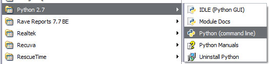
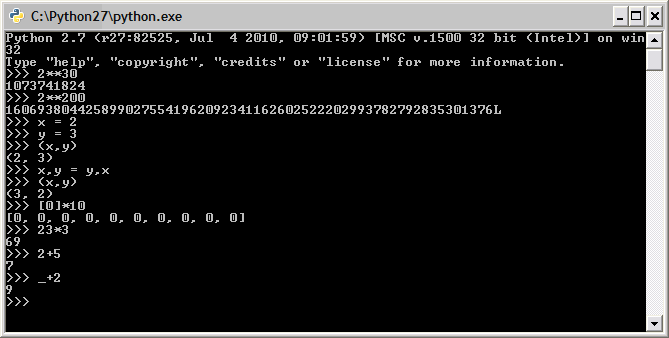
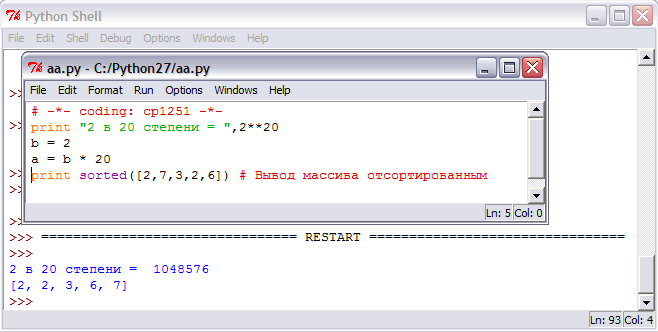
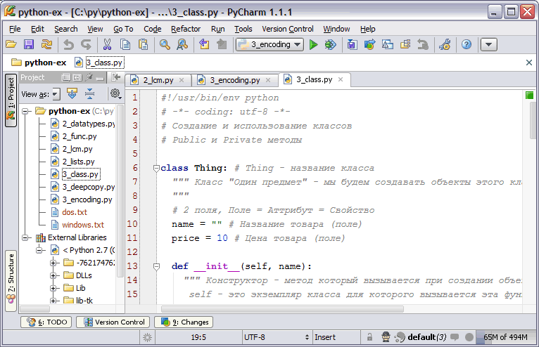
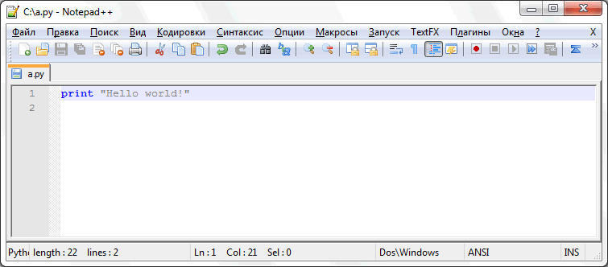

Язык программирования Python 3
Язык Python часто позволяет создавать более короткие и красивые решения. Например, при написании решении задач на языке Python не требуется самостоятельно реализовывать "длинную" арифметику.
Цель этого урока - дать вам начальные данные о языке Python в достаточной мере для решения на нём задач (создания консольных приложений с вводом-выводом при помощи текстовых файлов).
Преимущества и недостатки языка Python
Преимущества:
- Встроенная поддержка "длинной арифметики", комплексных чисел, списков, словарей, стеков, очередей и т.д.
- Кроссплатформенность (программы можно писать и выполнять в Windows / Linux / MasOS / Android и т.д.)
- Поддержка всех кодировок (например utf-8)
- Большое количество библиотек на все случаи (HTTP и FTP протоколы, работа с сетью, работа с изображениями и т.д.)
- Интерпретируемый язык (можно менять код "на" лету). Удобно писать служебные скрипты.
- Сборщик мусора позволяет не беспокоиться об освобождении памяти.
- Python сравнительно прост в изучении и позволяет выражать алгоритмы кратко и просто.
Недостатки:
- Низкая скорость выполнения (причины: интерпретация, динамическая типизация) по сравнению с Delphi, C/C++, C#, Java.
- Отсутствие библиотек для создания "родных" интерфейсов для Windows (для олмпиадных задач интерфейсы и не нужны).
Установка интерпретатора Python
Официальный сайт: http://www.python.org
Установка под Linux: обычно Python входит в дистрибутив и устанавливается при установке Linux. Установить в любой момент можно командой: sudo apt-get install python
Установка под Windows:
- Скачать на странице http://www.python.org/download/ версию для своей операционной системы
- Запустить PythonXXX.msi и пройти процесс установки (по умолчанию используется каталог C:\PythonXXX). XXX - Номер версии Python, например 27 или 34.
Запуск в режиме калькулятора

Запуск из меню кнопки "Пуск"
Можно запустить из командной строки набрав, например: C:\Python34\python.exe (для версии 3.4)

Работа с Python в режиме калькулятора
Из приведённого на картинке примера видно что:
- Python поддерживает длинную арифметику (2**30 - это 2 в 30-ой степени, а 2**200 - это 2 в 200-ой степени).
- Можно обменять значениями переменные в одну строку: x,y = y,x
- Легко создавать массивы заполненные нужными нам значениями. [0]*10 - создание массива из 10 нулей.
- Python можно использовать как мощный и гибкий калькулятор.
Среда разработки для Python
При использовании среды разработки обратная связь становится более короткой, программист "раньше" видит где он ошибся и может обучаться быстрее. Советую всем кто начинает программировать начинать работать в среде разработки (IDE) и только потом учиться использовать компиляцию из командной строки.
IDLE (Integrated DeveLopment Environment) - IDE, которая устаналивается сразу вместе с Python:

Запуск программы на выполнение - F5.
Среда разработки от компании JetBrains: PyCharm http://www.jetbrains.com/pycharm/

Редактор Notepad++
Для работы с текстом программы можно использовать любой текстовый редактор. Удобнее, если в редакторе есть подсветка синтаксиса. Notepad++ позиционируется как замена стандатному Блокноту (Notepad) в Windows с большими возможностями (прежде всего подсветкой синтаксиса для различных языков программирования).
Загрузить можно с сайта: http://notepad-plus-plus.org/download

Первая программа на Python
Решение задачи "A+B" с вводом из файла sum.in и выводом в файл sum.out.
# ~*~ utf-8 ~*~
import sys
sys.stdin = open("sum.in") # Закомментируйте эту строку для ввода с клавиатуры
sys.stdout = open("sum.out", "w") # Закомментрируйте эту строку для вывода на экран
A, B = int(input()), int(input()) # Вводим 2 целых A и B (они в разных строках)
print (A + B)
Типы данных в языке Python
- Числа:
- Целые: 2, 4, 99, 234789078743
- Действительные (с плавающей точкой): 2.3, 6.767
- Дроби: 1/2, 5/6
- Логический - значения могут принимать True (истина) или False (ложь) - результат проверки условия.
- Списки (list) - аналог массивов.
- Кортежи (tuple) - неизменяемые списки.
- Наборы (set) - неупорядоченные наборы значений.
- Словари (dict) - асоциативные массивы, наборы пар ключ-значение.
- Строки: "Hello world"
- ...это ещё не все...
sys.stdin = open("a.in","r") # Входной файл
sys.stdout = open("a.out","w") # Выходной файл
print("a=",a)
Демонстрация работы различных типов данных:
Понятие переменной, объекта, ссылки, семантика (значение) оператора присваивания
# -*- coding: utf-8 -*-
# Отличия переменной, объекта и ссылки
# Переменная приваивается "по значению"
a = 3
b = a
b = 4
print ("a =", a, ' b =', b) # a = 3 b = 4, переменная a не изменилась после изменения b
# Экземпляры классов присваиваются "по ссылке"
class MyClass: field = 1 # Создали класс MyClass с одним полем field
a = MyClass()
a.field = 3
b = MyClass()
b = a # Теперь b и a ссылаются на один и тот же объект
b.field = 4
print ("a.field =", a.field, ' b.field =', b.field) # a.field = 4 b.field = 4
print u'2. Операторы управления потоком вычислений'
# if - условный оператор
if (3 > 2) or (1==2) and (3==1+2): # Условие
print("3 > 2") # При выполнении условия
else: # Необязательный else
print("xxx") # Если условие не выполняется
# while - цикл с предусловием
i = 23 # Задаём значение переменной
while i > 0: # Пока больше 0
print(i,) # Печатаем в строку
i /= 2 # Деление нацело
print # Переводим на новую строку. Получилось: 23 11 5 2 1
# for - обработка множества значений
for str in ['first string', 'second', 'third']:
print(str)
for i in range(1999,2010):
print(i,) # Получилось: 1999 2000 2001 2002 2003 2004 2005 2006 2007 2008 2009
print u'3. Функции, определение и вызов функций, формальные и актуальные параметры, рекурсия'
# Определение рекурсивной функции вычисления факториала
def Factorial(n):
# Барьерное условие. Ограничивает область применимости функции
# "Мёртвые программы не лгут!"
assert n > 0
if n == 1:
return 1
else:
return n * Factorial(n - 1)
# print Factorial(-1) # При вызове будет ошибка с выводом всей
# последовательность
# Факториал при помощи тернарного оператора в Python
def Factorial2(n): return 1 if n == 1 else n * Factorial(n - 1)
# (Что-то) если (условие) иначе (что-то другое)
# В С/C++: (условие) ? (что-то) : (что-то другое)
# Пример вызова обеих функций
print "3! =", Factorial(3), ' ', Factorial2(3)
# Генератор
# 1 1 2 3 5 8 13
def fibonacci(max): # генератор (а не функция, т.к. оператор return заменён на yield)
a, b = 0, 1
while a < max:
yield a # return a, + запоминаем место рестарта для следующего вызова
a, b = b, a + b # параллельное присваивание, которое выполняется одновременно и параллельно
for n in fibonacci(100): # используем генератор fibonacci() как итератор
print n, # печатаем все числа Фибоначчи меньшие 100 через пробел
print
# Вычисление наименьшего общего делителя, % - деление по модулю (mod)
def GCD(a, b): return a if b == 0 else GCD(b, a % b)
print("GCD(30,45) =", GCD(30, 45)) # Результат: GCD(30,45) = 15
print(u"4. Представление чисел в языке Python, операции над числами")
from cmath import sin, sqrt
from math import * # Подключаем функции библиотеки math
print 2 ** 100 # возведение 2 в степень 100
print sin(pi * 0.5) # вычисление синуса от половины пи
print 3.23e10 # Экспоненциальная форма записи чисел
print u"Python работает с комплексными числами"
x = 1 + 2j # целое число и мнимое число
print x * 2
print u"Решим квадратное уравнение x*x+1=0 с комплексными корнями"
a,b,c = 1,0,1
D = b*b-4*a*c
dd = ((-sqrt(D), sqrt(D)) if D > 0 else (-1j * sqrt(-D), 1j * sqrt(-D)))
x = [(-b+d)/2*a for d in dd]
print x
i = 1
for c in u"Привет!":
print i,c
i += 1
print u"Привет!"
print u"5. представление строк в языке Python, простые и Unicode-строки, основные операции"
str = "String " + '2'
print str, ' ', str.upper(), ' ', str.lower(), ' ', str.center(20)
print str.count('t') # Количество букв t в строке
unicodeStr = unicode(u'Привет')
print unicodeStr, ' ', type(unicodeStr)
myString = "Не юникод-строка"
print u"Переводим её в Unicode и печатаем: ", myString.decode("utf-8") #
print unicodeStr.encode("utf-8")
# кодировка текста, Unicode (основные концепции, классы символов, уникальность представления);
s1 = "Тест"
s2 = u"Тест"
print s1, ' ', s2
#assert s1 == s2
# Основные структуры данных языка Python:
# списки (lists), тюплы (tuples), словари (dictionaries, dicts).
a = [1, 2, "a"] # список
b = (1, 2, "a") # кортеж, тюплы (tuples)
c = {'a': 1, 'b': 'B'} # словарь
l = ['A', 'B', 'C', 'D', 'E'] # Исходный список
print u"срез от нулевого до второго промежутка ", l[1:5] # ['A', 'B']
print u"срез от второго до второго с конца элемента", l[1:-2] # ['B', 'C']
print u"каждый второй элемент начиная с первого", l[1::2] # ['B', 'D']
print u"все элементы в обратном порядке", l[::-1] # ['E', 'D', 'C', 'B', 'A']
tuple = (1, 3, 2, "a") # кортеж, тюпл (tuple)
print type(tuple), ' ', tuple # (1, 3, 2, 'a')
for i in tuple: print i, # 1 3 2 a
t = 12345, 54321, 'hello!' # tuple packing
print t # (12345, 54321, 'hello!')
Вычисление Наибольшего Общего Делителя (НОД) и Наименьшего Общего Кратного (НОК)
# Наибольший общий делитель (НОД) - Greatest Common Divisor def GCD(x,y): return x if y == 0 else GCD(y,x%y) # Наименьшее общее кратное (НОК) НОК(x,y) = x*y/НОД(x,y) - Least Common Multiple def LCM(x,y): return x*y / GCD(x,y) print GCD(10,15) print LCM(10,15) print LCM(10,0) print LCM(0,30) print LCM(60,144)
Найти минимум и максимум в массиве:
A = [100, 34, 678] print "Количество элементов в массиве:",len(A) print "Минимум:",min(A) print "Максимум:",max(A)
Различные реализации вставки элемента в отсортированный массив так чтобы он остался отсортированным:
# -*- coding: utf-8 -*-
# Вставка элемента в отсортированный массив
# так чтобы он оставался отсортированным
# 1. Через insert/append
def Insert1(b, value): # В функцию передаётся исходный массив b и значение value
c = list(b) # Делаем копию списка
for i, x in enumerate(b): # Пробегаем по исходному списку
if x > value: # Если нашли элемент больше заданного
c.insert(i, value) # Добавляем перед ним заданный
return c # Возвращаем изменённый список
c.append(value) # Если мы так и не нашли заданный элемент, добавляем значение в конец
return c # возвращаем новый массив
# 2. Используя срезы
def Insert2(b, value):
for i, x in enumerate(b): # i - индекс в массиве, x - значение
if x > value:
return b[:i] + [value] + b[i:] # Слияние 3-х массивов
return b + [value]
# 3. Двоичный поиск (последнего числа меньшего value)
def Insert3(b, value):
min, max = 0, len(b)
while max - min > 0:
m = (min + max) // 2 # Делим отрезок пополам
if b[m] > value:
max = m
else:
min = m + 1
return b[:max] + [value] + b[max:]
# 4. Используя библиотеку bisect - двоичный поиск и вставка
def Insert4(b, value):
from _bisect import insort
l = list(b)
insort(l, value)
return l
# 5. Добавление путем создания нового списка (поэлементно)
def Insert5(b, value):
p = []
inserted = False
for x in b:
if x > value and not inserted:
p.append(value)
inserted = True
p.append(x)
if not inserted:
p.append(value)
return p
# Проверка, что все функции работают как надо (простейший модульный тест)
assert Insert3([11], 10) == [10, 11]
assert Insert3([], 10) == [10]
assert Insert3([3], 10) == [3, 10]
assert Insert3([3, 13], 10) == [3, 10, 13]
assert Insert3([2, 6, 8], 10) == [2, 6, 8, 10]
assert Insert3([2, 6, 8], 7) == [2, 6, 7, 8]
assert Insert3([2, 6, 8], 5) == [2, 5, 6, 8]
assert Insert3([2, 6, 8], 3) == [2, 3, 6, 8]
assert Insert3([2, 6, 8], 1) == [1, 2, 6, 8]
b = [2, 6, 8, 14, 15, 20]
assert Insert3(b, 10) == [2, 6, 8, 10, 14, 15, 20]
assert Insert3(b, 7) == [2, 6, 7, 8, 14, 15, 20]
assert Insert3(b, 5) == [2, 5, 6, 8, 14, 15, 20]
assert Insert3(b, 1) == [1, 2, 6, 8, 14, 15, 20]
assert Insert1([11], 10) == [10, 11]
assert Insert1([], 10) == [10]
assert Insert1([3], 10) == [3, 10]
assert Insert1([3, 13], 10) == [3, 10, 13]
assert Insert1([2, 6, 8], 10) == [2, 6, 8, 10]
assert Insert1([2, 6, 8], 7) == [2, 6, 7, 8]
assert Insert1([2, 6, 8], 5) == [2, 5, 6, 8]
assert Insert1([2, 6, 8], 3) == [2, 3, 6, 8]
assert Insert1([2, 6, 8], 1) == [1, 2, 6, 8]
assert Insert2([11], 10) == [10, 11]
assert Insert2([], 10) == [10]
assert Insert2([3], 10) == [3, 10]
assert Insert2([3, 13], 10) == [3, 10, 13]
assert Insert2([2, 6, 8], 10) == [2, 6, 8, 10]
assert Insert2([2, 6, 8], 7) == [2, 6, 7, 8]
assert Insert2([2, 6, 8], 5) == [2, 5, 6, 8]
assert Insert2([2, 6, 8], 3) == [2, 3, 6, 8]
assert Insert2([2, 6, 8], 1) == [1, 2, 6, 8]
assert Insert5([11], 10) == [10, 11]
assert Insert5([], 10) == [10]
assert Insert5([3], 10) == [3, 10]
assert Insert5([3, 13], 10) == [3, 10, 13]
assert Insert5([2, 6, 8], 10) == [2, 6, 8, 10]
assert Insert5([2, 6, 8], 7) == [2, 6, 7, 8]
assert Insert5([2, 6, 8], 5) == [2, 5, 6, 8]
assert Insert5([2, 6, 8], 3) == [2, 3, 6, 8]
assert Insert5([2, 6, 8], 1) == [1, 2, 6, 8]
print b
# Дан массив с различными элементами. Найти количество положительных элементов, расположенных между минимальным и максимальным элементами.
b = [12, 6, -2, 8, -5, 13, -34, 1, -4]
max = b[0]
min = b[0]
for x in b:
if x > max:
max = x
if x < min:
min = x
Замена отрицательных элементов массива нулями при помощи генератора:
# Замена отрицательные элементы массива нулями b = [12, 6, -2, 8, -5, 13, -34, 1, -4] p = [0 if x < 0 else x for x in b] print p
Даны массивы А и В. Вычислить суммы соответствующих (по индексу) элементов массивов.
A = [28, 15, 4, -5, 6] B = [3, 10, 1, -4, -8] for k, v in enumerate(A): # k - индекс в массиве, v - значение в массиве A print A[k]+B[k], print
Дано произвольное значение b и произвольный массив G. Найти сумму элементов массива G, меньших заданного b.
b = 6 G = [5,6,71,3,1,3] print sum(x for x in G if x < b)
Работа со списками (list)
# -*- coding: utf-8 -*- # Пример со списками и словарями l = [2,3,36,4] # Добавление элемента в конец списка l.append(56) # Вставка элемента в середину списка l.insert(3,999) # Вставить элемент 999 после 3-его элемента списка print l # l[6] = 10 # Шестого элемента нет => Будет ошибка
Работа со словарями (dict)
# Создаём словарь
d = {}
d[23] = 67
print d # {23: 67}
d[5] = 231
print d # {5: 231, 23: 67}
# Переписываем 23-ий элемент
d[23] = 554
d[23462356] = (2,3)
d[234656] = "sdfsgd"
for k in sorted(d.keys()):
print "d[%s] = %s" % (k, d[k])
print d
b = [3,2,4]
c = list(b)
b.append(55)
print 'b =',b
print 'c =',c
class Test:
value = 1
a = Test()
a.value = 2
b = a
b.value = 3
print 'a =',a.value
print 'b =',b.value
Чтение и запись файлов в Python
Пример 1. Читаем размер массива, сам массив, сортируем и выводим.
import sys # Подключаем библиотеку для перенаправления потока
sys.stdin = open("sort.in") # Закомментируйте эту строку для ввода с клавиатуры
sys.stdout = open("sort.out", "w") # Закомментрируйте эту строку для вывода на экран
N = input() # Вводим количество элементов
A = map(int,raw_input().split()) # Вводим сам массив
# raw_input - ввод строки, split - деление, int - приведение к целым, map - применить ко всему массиву
A.sort() # Сортировка
for a in A: print a, # Вывод отсортированного массива в одну строку разделяя числа пробелами
Пример входного файла sort.in:
13 4 3 8 9 1 32 4 3 2 2 65 4 3
Пример выходного файла sort.out:
1 2 2 3 3 3 4 4 4 8 9 32 65
Пример 2. Другой способ чтения:
import fractions, re
with open('gcd.in') as fi: # Открываем входной файл для чтения
a, b = [int(i) for i in re.match(r'(\d+)\s(\d+)', fi.read()).groups()]
with open('gcd.out', 'w') as fo: # Открываем выходной файл для записи
fo.write(str(fractions.gcd(a,b)))
Стандартные алгоритмы в Python
Ссылки
Оператор присваивания
Среды, кучек массива, подстрока
a = ['a', 'b', 'c', 'd', 'e', 'f'] # Массив # 0 1 2 3 4 5 < Индексы # Хочу получить подмассив начиная с элемента с индексом 1 a[1:5] # Элементы с 1-ого до 5-ого. # l[a,b] - срез [a,b) - не включая элемент с индексом b a[-1] # последний элемент массива a[0:-1] # Массив со всеми элементами кроме последнего # Удаление элементов del a[-1] # Удаление последнего элемента del a[5:7] # Удаление элементов с 5-ого (включительно) до 7-ого a.append(e) # Добавление элемента в конец a.insert(2,e) # Добавление элемента в произвольное место